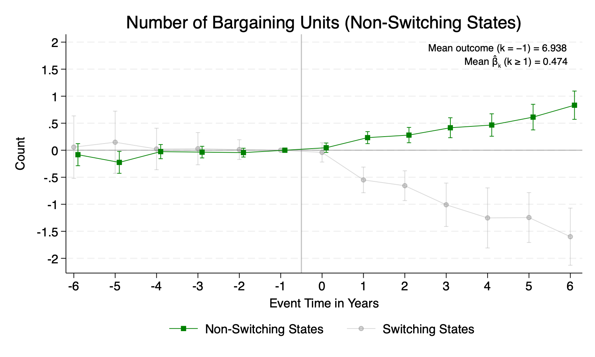
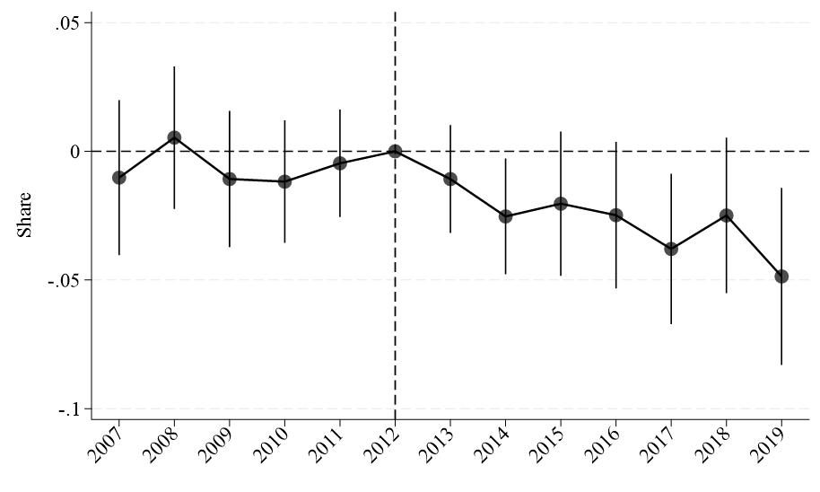
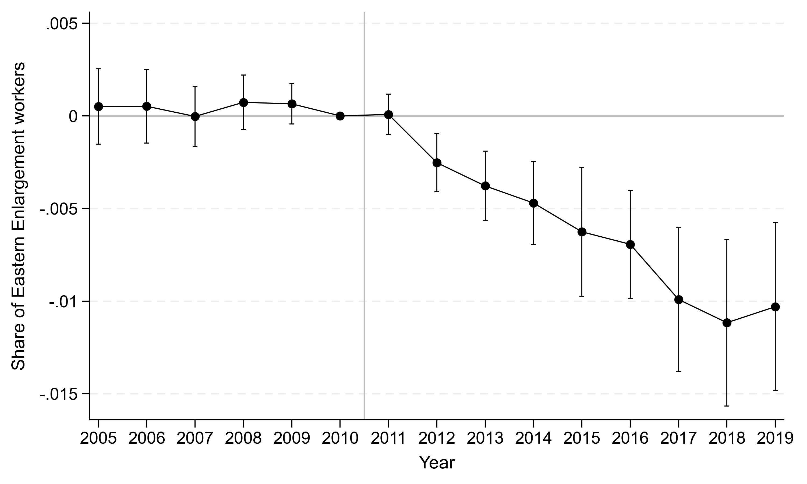

Research
Job Market Paper
Unions' Internal Networks and Spillovers: Evidence from Right-to-Work Laws in the US
Abstract and main result
We document US labor unions' expanding geographic scope and show how the resulting organizational networks propagate shocks across distant labor markets. Between 2001 and 2011, the number of states in which the average union local (branch) operated doubled from 1.5 to 3. A consequence of this spatial configuration is that shocks to unionized workers in one state will likely impose spillovers outside it if unions respond by reallocating resources across states. We show this mechanism at work in the context of state-level right-to-work (RTW) laws, which make it optional for workers covered by union contracts to pay dues. A model of a multistate union predicts spillovers whose sign depends on the relative strength of substitution and scale effects. We test for spillovers using variation in union exposure to five new RTW laws adopted between 2012 and 2017. The laws had negative direct effects in the adopting states and positive spillovers to nonadopting states; six years after an RTW law's passage, the average treated union represented 20 percent fewer bargaining units in the adopting states but had offset 35 percent of this loss in worker-level coverage by substituting toward nonadopting states—with more than half of this spillover affecting noncontiguous states. We find no effect on the price or quality of union services. New organizing explains 34 percent of the spillover; the rest is attributable to successful contract renegotiations for existing members. Despite this substitution, the affected unions saw a persistent decline in membership, revenues, and assets.


Work in Progress
The Effects of Minimum Wages on Collective Bargaining: Evidence from Germany [slides] [draft available soon]
Abstract and main result
Legislative minimum wages and collective bargaining are two central policy instruments for shaping workers' wages and working conditions. This paper studies how they interact using the 2015 introduction of the German statutory minimum wage. We combine linked employer-employee data with newly digitized collective bargaining negotiation (CBN) records. Our empirical design exploits pre-reform heterogeneity in minimum-wage exposure across sector-by-state cells using the worker-level bite of the minimum wage. We find three main results. First, collective bargaining agreement (CBA) coverage falls in more exposed cells by about 5 percentage points at the establishment level, relative to a baseline coverage of 29.7 percent. At the worker level, there is a 4-5 percentage point decline relative to the baseline share of 56.7 percent. Second, minimum-wage exposure raises both wage-growth demands and negotiated wage outcomes in CBNs, consistent with spillover pressure into collectively bargained wage ladders. Third, the negative coverage effect is concentrated in high-concentration labor markets (high HHI), consistent with a monopsony-based mechanism where firms face weaker competitive pressure to preserve coverage. Taken together, the evidence suggests that statutory wage floors can strengthen wage growth within bargaining while simultaneously reducing bargaining coverage, particularly in concentrated markets.


Immigration and Insider-Outsider Dynamics in German Works Councils
Abstract and main result
This paper investigates the presence of insider-outsider dynamics in German works councils, often cited as model examples of codetermination between management and workers. Works councils are worker organizations that are consulted on a variety of shop-floor decisions, including hiring and firing. Because they have been shown to increase job security, there is some debate on whether they exhibit insider-outsider dynamics in their decisions. This has implications for firm performance (through hiring flexibility) and job quality (for jobs to be attractive to outsiders). We use a novel setting to study this question. In 2011, Germany opened its labor market to workers from eight new countries that joined the EU in 2004. This led to a substantial immigration-driven labor supply shock, with the share of immigrants in the German workforce more than doubling between 2011 and 2019. We compare the response of firms that had works councils before 2010 to those that did not in a difference-in-differences framework. Firms with works councils hired fewer workers from the new EU countries as a share of their workforce. However, they hired a higher share of workers on full-time contracts relative to firms without works councils, and these workers performed more complex tasks. We find no effects on wages and employment at the firm level. Our results highlight the role of insider-outsider dynamics in works councils in explaining recent evidence of firm segmentation between incumbent and immigrant workers.

